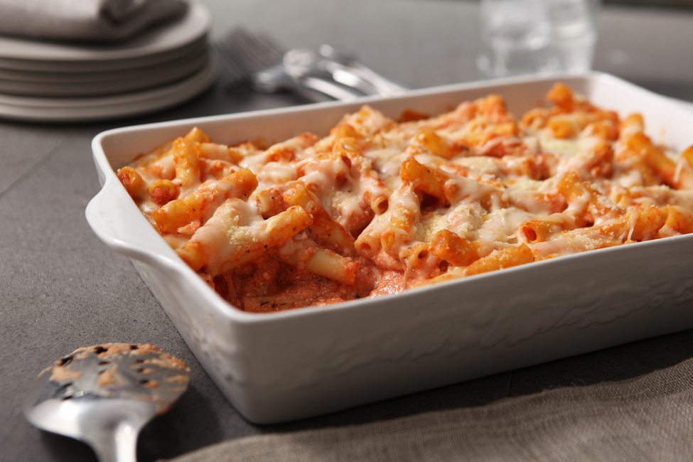

B's Ziti

Description
This dish is a perfect dinner for a family. This recipe is your gateway to a cheesy blissful, Itis causing, filling dinner. So get ready for a quick and easy meal that promises an impressive cheese pull!
Notes
A mix of cheeses such as Cheddar, Asiago, Gouda, Feta, and parmesan is what I use when I make this dish
Baking time will vary based on amount, baking dish used, and desired texture
Not all spices/herbs are needed
Ingredients
A minium of three different types of cheeses (see notes)
Whole milk
Pasta:rigatoni and bowtie
1-2 egg(s)
Flour
Olive oil
Spices and Herbs!
Salt
Pepper
Black lime
Both smoked and sweet paprika
Parsley
Chili powder
Oregano
Basil
Bay leaves
Rosemary
Cilantro
Ground sage
Ground tumeric
Garlic
Pasta sauce
Steps:
Boiling the pasta and making the sauce
- Preheat oven to 340 degrees
- Place a pot of water on the stove and season with salt heavily
- Place 1-2 pieces of garlic partially crushed into the water
- Add a tea diffuser filled with the spices and herbs below to the pot
- Parsley
- Oregano and Basil
- Ground sage
- Cilantro
- Add 2-3 bay leaves and turmeric to the water
- Turn the heat on the stove to high and allow the water to come to a boil
- Place the desired amount of pasta in the pot and cook for about the time listed on the package, 1-2 minutes less than listed for best results
Making the sauce
- Crush 3-4 cloves of garlic into a small sauce pot
- Add a light layer of olive oil to the sauce pot
- Turn on the burner to medium and cook the garlic until lightly golden brown
- Add half of your pasta sauce and mix well
- Add half a cup of your pasta water to the sauce pot and mix well
- While stirring occasionally let sit on burner for 2 minutes
- Remove from heat and set aside
Making the cheese mix
- Grate all the cheese into one bowl
- Create a hole in the middle of the cheese mix and add one egg, flour, and whole milk
- Next add your spices to the same hole in the middle
- Black lime
- salt and pepper
- Chili powder,smoked and sweet paprika
- Ground Rosemary
- Mix the cheese and mixture with a fork until well combined
Assembly/Cooking
- Combine your garlic pasta sauce with your non-garlic sauce and mix well
- Add a layer of your know recombined pasta sauce tot eh baking dish
- Add a layer of pasta to the baking dish
- Add a layer of your cheese mix on top of the pasta in your baking dish
- Repeat the last three steps 2-3 times depending on size of baking dish
- Cover with foil and place into the over for 35 minutes
- remove the baking dish from oven and remove teh tin foil covering
- Grate more cheese on top and place back into the oven uncovered for 5-8 minutes
- Remove from oven and allow to cool
Enjoy!